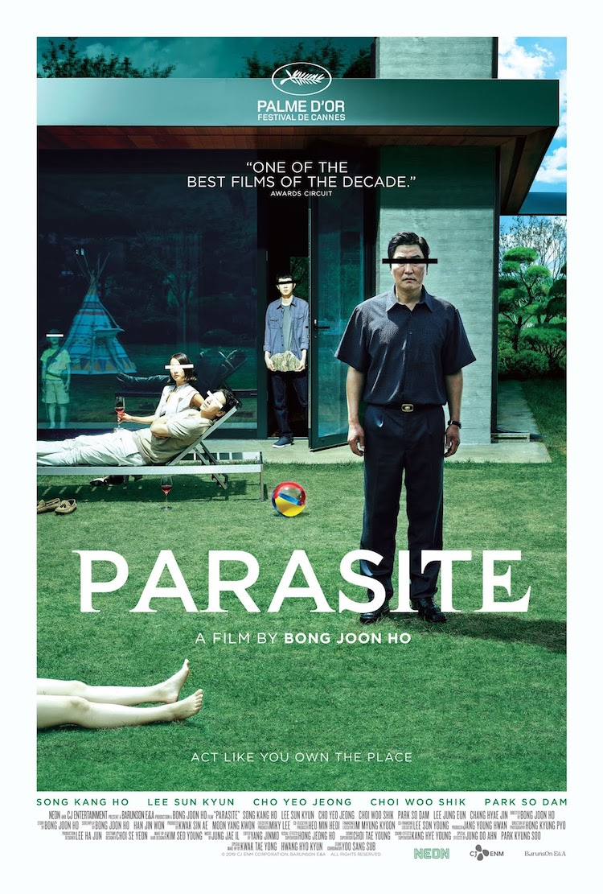

Parasite

Summary
Parasite is a South Korean film, and happens to be
the first ever foreign-language film to win best picture at the Oscars! It highlights
class disparity and shows the lengths that some people are willing to go in order to not live
in poverty. The main characters are a family that live in the slums of a South Korean city
they form a genius plan in order to get hired by a rich family for helping around the house.
Ultimately, things backfire, and they end up right back where they were.
I chose this color scheme to represent the movie because
I feel that it goes well with the poster's color scheme.